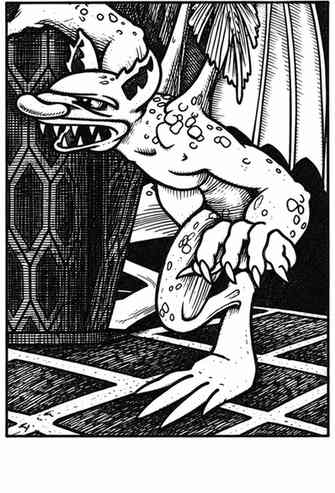

人造侏儒 · Homunculus
 |
|
人造侏儒由魔法师和炼金术士通过特殊工序创造并赋予生命。它以后肢行走，也能飞行。其咬击造成 1–3 点伤害；目标还须通过对抗魔法的豁免检定，否则陷入昏睡，持续 5–30 分钟。人造侏儒的豁免能力与其创造者相同。
人造侏儒不能说话，却知道魔法师所知的一切；魔法师能够通过它的眼睛和耳朵观察与聆听。两者之间有心灵感应连接，人造侏儒可在距离主人 48 寸内受其控制，而且绝不会自愿离开这个范围。若人造侏儒被杀，魔法师会立刻受到 2–20 点伤害。
魔法师需要聘请炼金术士创造人造侏儒；炼制成形液体需 1–4 周，耗费魔法师 1 品脱鲜血及 500–2,000 金币。之后魔法师对液体施展“修复术”“镜像术”与“法师之眼”，使其成形。
外观。 人造侏儒外形近似人类，高约 1 尺半，皮肤呈绿色爬行动物般的质感，有皮革状翅膀，嘴似蝙蝠，牙齿带有毒素。被咬者若未通过对抗魔法的豁免检定，便会昏睡。